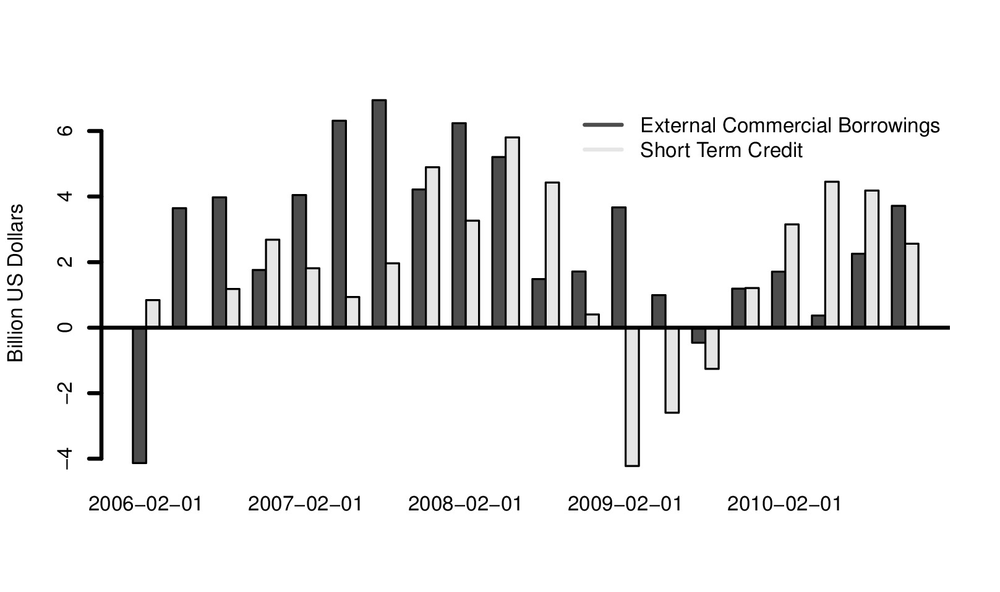
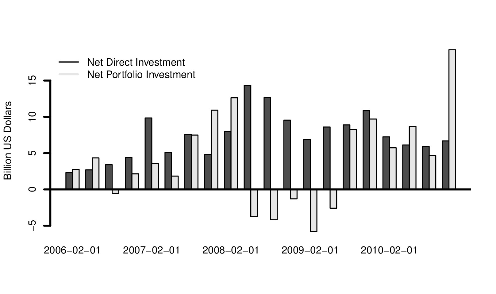
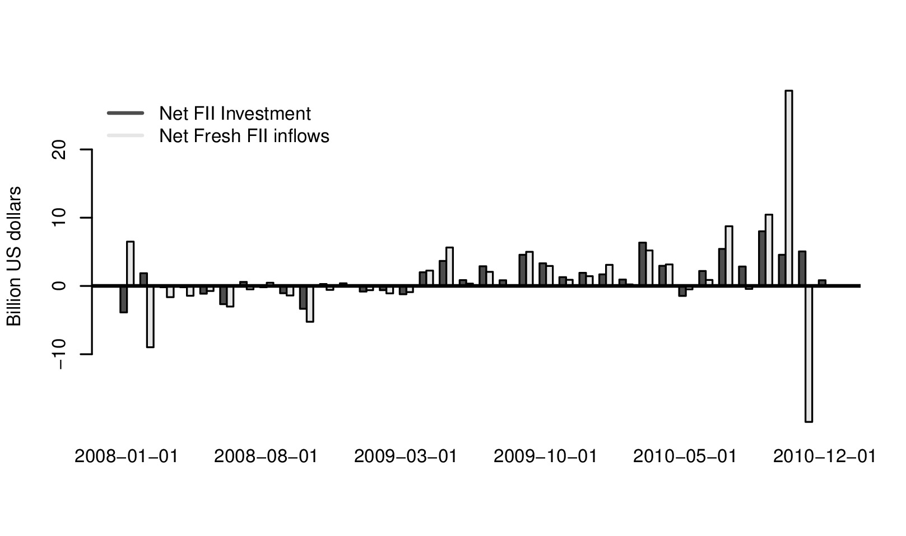

Making sense of capital flows
Financial Express, 29 January 2011
The RBI has expressed concerns about the composition of capital flows. The January 25, 2010 credit policy said that "the composition of capital inflows needs to shift towards longer-term commitments such as FDI". While at first blush the data suggests that there may be a cause for concern, but a more detailed examination of the data suggests that it may be a bit soon to start worrying.
Figure 1 shows the composition of loans. The quarterly data from the balance of payments from the RBI shows the flows of External Commercial Borrowings (ECBs), loans of a maturity of 3 and 5 years, and short term loans, of maturity less than one year, in US dollars. The figure shows an increase after the crisis. The increase in external borrowing has been one of the concerns of policy makers in recent months. In year on year terms this number has risen very sharply. However, this is not surprising given that we are comparing the present situation to flows during the global financial crisis. If instead, we look at a longer period, of about 5 years, as figure 1 shows, we find that flows are not as big as before the crisis or getting bigger. This is true both for short term loans as well as for external commercial borrowing.
It is also illustrative to look at these flows as a percentage of GDP. In July-September 2007, ECB flows were at 1.9 percent of GDP. In September 2010, they were at 1.5 percent of GDP. Similarly, in July-Setptember 2007 short term loan inflows were at 2.2 percent of GDP. In July-September 2010, they were at 1 percent of GDP.
The second cause for concern is foreign investment flows. Figure 2 shows Balance of Payments data for foreign direct investment (FDI) and foreign portfolio investment (FII). The data suggests that there was a huge increase in FII inflows in the latest quarter under consideration. As a percentage of GDP. In July-September 2007, FDI flows were at 2.2 percent of GDP. In September 2010, they were at 2.7 percent of GDP. Similarly, in July-Setptember 2007, FII inflows were at 4.9 percent of GDP. In July-September 2010, they were at 7.8 percent of GDP. This is a huge number and has caused major concern. So what does this picture represent?
To answer this question it is interesting to look at monthly data on capital flows. This can be seen in Figure 3 which shows RBI data for FII inflows. The graph shows that the sharp inflows were followed by a sharp outflow. RBI data shows fresh inflows into the equity market in September 2010 of USD 10 billion, and in October 2010 of USD 28.6 billion. This was followed by an outflow in December of USD 20 billion. What did this sharp inflow and outflow consist of?
While there is no public disclosure of the purpose for which each FII brings in dollars into India, one reasonable explanation seems to be the Coal India IPO which was oversubscribed 10 times. Raising USD 3 billion from the market meant that upto USD 30 billion was employed for subscription to the IPO. Part of this was accounted for by FIIs and would have to be money that showed in first as inflows, and later as outflows, after the IPO. Not all FII inflows would be for the Coal India IPO, of course, and this is only part of the explanation for the sharp increase in inflows and then the sharp outflow.
What it does suggest, however, to the policy maker is that simply looking at Figure 2 which shows a massive increase in FII flows may lead to misplaced concerns.
In its concern about the composition of inflows, RBI needs to move towards a focus on the currency composition of foreign borrowing. Arguably, the comparison with 2007 is a comparision with a period of large inflows. So while, as we argue above, foreign are still smaller compared to the pre-crisis years, an improvment in the policy framework can be made by focussing on reduced loans denominated in foreign currency to those denominated in rupees. This would mean changing the policy bias away from dollar denominated ECBs, where Indian firms hold the foreign currency exposure to foreign invesment in corporate bonds where arbitrary ceiling have been imposed. This has moved the composition of loans away from domestic currency to foreign currency. By 2009, the stock of corporate borrowing under the ECB window (dollar denominated) stood at above USD 62 billion, while foreign lending to firms in rupee denominated debt was capped by the regulator at one-tenth of that value, at USD 6 billion. The bias of controls on rupee denominated versus dollar denominated debt resulted in higher dollar denominated borrowings by firms. The RBI needs to revise this policy if it wants to make the Indian economy more resilient.
Back up to Ila Patnaik's media page
Back up to Ila Patnaik's home page